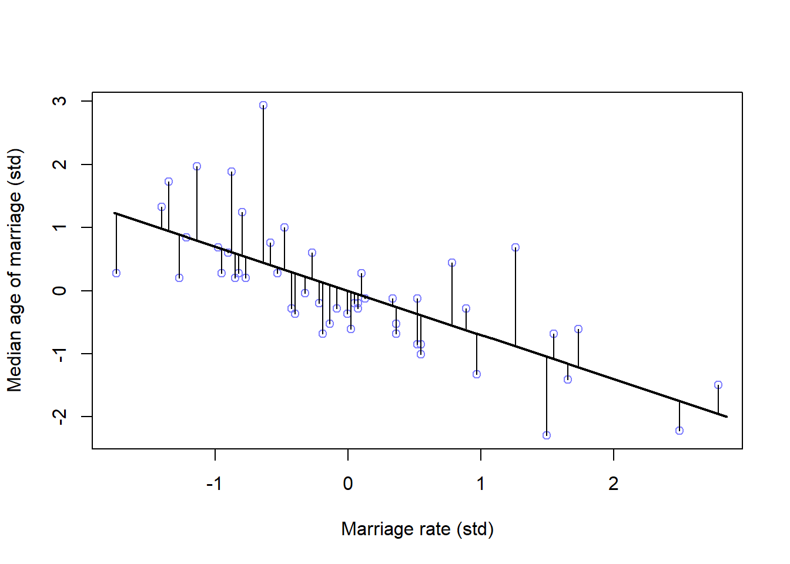

Chapter 3 Sampling the imaginary
3.0.1 Probabilities vs. Frequency counts
Vampires in the population
Probabilities
There is a blood test that can correctly identify a vampire 95% of the time. Or mathematically, Pr(positive|vampire) = 0.95. 1% of the time the test gives a false positive or Pr(positive|mortal) = 0.01. Also, vampires are rare in the population only making up 0.1% of the population so, Pr(vampire) = 0.001
If someone tests poisitve, what is the probability that they are actually a vampire?
Using Bayes’ theorem, Pr(vampire|positive) can be inverted as:
\[\begin{equation} \text{Pr(vampire|positive)} = \frac{\text{Pr(positive|vampire)} \times \text{Pr(vampire)} {\text{Pr(positive)}} \end{equation}\]
Here, Pr(positive) is the average probability of a positive test result or:
\begin{eqaution} = + (1 - ) \end{equation}
Pr_Positive_Vampire <- 0.95
Pr_Positive_Mortal <- 0.01
Pr_Vampire <- 0.001
Pr_Positive <- Pr_Positive_Vampire * Pr_Vampire + Pr_Positive_Mortal * (1 - Pr_Vampire)
(Pr_Vampire_Positive <- Pr_Positive_Vampire * Pr_Vampire / Pr_Positive)## [1] 0.08683729There is an 8.7% chance that a positive test result is actually a vampire.
Frequency counts
- In 100,000 people, 100 are vampires
- of the 100 vampires, 95 will test positive
- of the 99,900 mortals, 999 will test positive
Pr_Positive_Vampire <- 95 / 100
Pr_Positive_Mortal <- 999 / 99900
Pr_Vampire <- 100 / 100000
Pr_Positive <- 95 + 999
(Pr_Vampire_Positive <- Pr_Positive_Vampire * 100 / Pr_Positive)## [1] 0.08683729OR:
Pr_Positive_Vampire <- 95 #positive results from vampires
Pr_Positive <- 95 + 999 #all positive results
(Pr_Vampire_Positive <- Pr_Positive_Vampire / Pr_Positive)## [1] 0.086837293.1 Sampling from a grid-approximate posterior
Let’s recreate the grid approximation for the globe tossing example:
p_grid <- seq(from = 0, to = 1, length.out = 1000) #create 1000 values between 0 and 1
prob_p <- rep(1, 1000) #the uniform prior of 1
prob_data <- dbinom(6, size = 9, prob = p_grid) #The observed tosses (data)
posterior <-prob_data*prob_p #calculate the posterior
posterior <-posterior/sum(posterior) #standardize by dividing by the sumLet’s pull some samples from our posterior (n = 10000)
samples <- sample(p_grid, prob = posterior, size = 1e4, replace = TRUE) #notice replace set to true as there are only 1000 values in p_grid
#find the mode of your samples
getmode <- function(x) {
uniqv <- unique(x)
uniqv[which.max(tabulate(match(x, uniqv)))]
}
samples_mode <- getmode(samples)And plot them
plot(samples) #left panel of figure 3.1
abline(h = samples_mode, col = 'red')
View the samples as a density
plot(density(samples), main = "Density of samples from posterior")
polygon(density(samples), col = 'black', border = 'blue')
abline(v = samples_mode, col = 'red')
#library(rethinking)
#dens(samples)3.2 Sampling to summarize
Common questions about your posterior: 1. intervals of defined boundaries 2. intervals of defined probability mass 3. point estimates
3.2.1 Intervals of defined boundaries
What is the posterior probability that the proportion of water is >0.5?
sum(posterior[p_grid < 0.5])## [1] 0.1718746about 17%
Doing the same using the samples from the posterior
sum(samples < 0.5) / 1e4 #divide by the number of samples you gathered## [1] 0.1722what about between 0.5 and 0.75?
sum(samples > 0.5 & samples < 0.75) / 1e4## [1] 0.6082Recreating figure 3.2 (upper left panel)
library(ggplot2)
library(dplyr)##
## Attaching package: 'dplyr'## The following objects are masked from 'package:stats':
##
## filter, lag## The following objects are masked from 'package:base':
##
## intersect, setdiff, setequal, uniondf <- tibble(p_grid, posterior)
df %>% ggplot(aes(x = p_grid)) +
geom_line(aes(y = posterior)) +
geom_ribbon(data = df %>% filter(p_grid < 0.5),
aes(ymin = 0, ymax = posterior)) +
labs(x = "proportion of water (p)",
y = "density") +
theme_bw() upper right panel
upper right panel
df %>% ggplot(aes(x = p_grid)) +
geom_line(aes(y = posterior)) +
geom_ribbon(data = df %>% filter(p_grid < 0.75 & p_grid > 0.5),
aes(ymin = 0, ymax = posterior)) +
labs(x = "proportion of water (p)",
y = "density") +
theme_bw()
3.2.2 intervals of defined mass
finding the lower 80% of the probability mass using samples
(q_80 <- quantile(samples, 0.8))## 80%
## 0.7587588finding the middle 80% (10-90%)
(q_10_90 <- quantile(samples, c(0.1, 0.9)))## 10% 90%
## 0.4494494 0.8108108Bottom panels to figure 3.2 lower left:
df %>% ggplot(aes(x = p_grid)) +
geom_line(aes(y = posterior)) +
geom_ribbon(data = df %>% filter(p_grid < q_80),
aes(ymin = 0, ymax = posterior)) +
annotate(geom = 'text', x = 0.25, y = 0.0025,
label = 'lower 80%') +
labs(x = "proportion of water (p)",
y = "density") +
theme_bw()
df %>% ggplot(aes(x = p_grid)) +
geom_line(aes(y = posterior)) +
geom_ribbon(data = df %>% filter(p_grid > q_10_90[1] & p_grid < q_10_90[2]),
aes(ymin = 0, ymax = posterior)) +
annotate(geom = 'text', x = 0.25, y = 0.0025,
label = 'middle 80%') +
labs(x = "proportion of water (p)",
y = "density") +
theme_bw()
example of three tosses and three water observations:
p_grid <- seq(from = 0, to = 1, length.out = 1000)
prior <- rep(1, 1000)
likelihood <- dbinom(3, size = 3, prob = p_grid)
posterior <- likelihood * prior
posterior <- posterior / sum(posterior)
samples <- sample(p_grid, size = 1e4, replace = TRUE, prob = posterior)Getting the 50% interval
quantile(samples, c(0.25, 0.75))## 25% 75%
## 0.7024525 0.9309309#PI(samples, prob = 0.5) #rethinking packageTidybayes package:
library(tidybayes)
median_qi(samples, .width = 0.5)## y ymin ymax .width .point .interval
## 1 0.8438438 0.7024525 0.9309309 0.5 median qiNotice that all methods above give us the same interval from ~70 - ~93 With tidybayes, you can also look for multiple intervals at once:
median_qi(samples, .width = c(0.5, 0.8, 0.99))## y ymin ymax .width .point .interval
## 1 0.8438438 0.7024525 0.9309309 0.50 median qi
## 2 0.8438438 0.5604605 0.9749750 0.80 median qi
## 3 0.8438438 0.2472472 0.9989990 0.99 median qiFinding the Highest Posterior Density Interval (HPDI)
#HPDI(samples, prob = 0.5) #rethinkingmode_hdi(samples, .width = 0.5) #tidybayes## y ymin ymax .width .point .interval
## 1 0.9509176 0.8428428 0.998999 0.5 mode hdiNote: you can get just the points of refernce by using qi() for quantiles and hdi() for highest density intervals. Useful for plotting
recreate figure 3.3 left panel
df <- tibble(p_grid, posterior)
df %>%
ggplot(aes(x = p_grid)) +
geom_ribbon(data = df %>% filter(p_grid > qi(samples, .width = 0.5)[1] &
p_grid < qi(samples, .width = 0.5)[2]),
aes(ymin = 0, ymax = posterior)) +
geom_line(aes(y = posterior)) +
labs(subtitle = '50% Percentile interval',
x = 'proportion of water (p)',
y = 'density')+
theme_bw() right panel
right panel
df %>%
ggplot(aes(x = p_grid)) +
geom_ribbon(data = df %>% filter(p_grid > hdi(samples, .width = 0.5)[1] &
p_grid < hdi(samples, .width = 0.5)[2]),
aes(ymin = 0, ymax = posterior)) +
geom_line(aes(y = posterior)) +
labs(subtitle = '50% HPDI',
x = 'proportion of water (p)',
y = 'density')+
theme_bw()
3.2.3 Point estimates
How to get a single useful (?) point estimate for your parameter. First option is the maximum a posteriori (MAP).
p_grid[which.max(posterior)] ## [1] 1With samples:
Mode(samples) #tidybayes## [1] 0.9509176#chainmode(samples, adj = 0.01) #rethinkingwhat about mean or median?
mean(samples)## [1] 0.799603median(samples)## [1] 0.8438438Visualize the mean, median, and mode (figure 3.4)
- create a small data frame
(
point_estimates <-
bind_rows(
mean_qi(samples),
median_qi(samples),
mode_qi(samples)
) %>%
select(y, .point) %>%
mutate(x = y + c(-0.03, 0.03, -0.03),
z = c(0.001, 0.0015, 0.0025))
)## y .point x z
## 1 0.7996030 mean 0.7696030 0.0010
## 2 0.8438438 median 0.8738438 0.0015
## 3 0.9509176 mode 0.9209176 0.0025- plot
df %>%
ggplot(aes(x = p_grid)) +
geom_ribbon(aes(ymin = 0, ymax = posterior),
fill = "grey75") +
geom_vline(xintercept = point_estimates$y) +
geom_text(data = point_estimates,
aes(x = x, y = z, label = .point),
angle = 90) +
labs(x = "proportion of water (p)",
y = "density") +
theme(panel.grid = element_blank())
How do we choose between the point estimates? Loss functions
If we assume that p = 0.5 then the expected loss would be:
sum(posterior * abs(0.5 - p_grid))## [1] 0.3128752applying this method to all values of p_grid:
loss <- sapply(p_grid, function(d) sum(posterior * abs(d - p_grid)))Now find the p value with the lowest loss
p_grid[which.min(loss)]## [1] 0.8408408Visualize the loss function
min_loss_x <- p_grid[which.min(loss)]
min_loss_y <- loss[which.min(loss)]
df <- tibble(p_grid, loss)
df %>%
ggplot(aes(x = p_grid)) +
geom_ribbon(aes(ymin = 0, ymax = loss), fill = 'grey75') +
geom_point(aes(x = min_loss_x, y = min_loss_y), size = 3, shape = 21, color = 'blue') +
labs(x = 'decision',
y = 'expected proportional loss') +
theme(panel.grid = element_blank())
3.3 Sampling to simulate prediction
McElreath’s 5 reasons for posterior simulation:
1. Model design - We can sample from both the posterior and the priors to see how the model behaves
2. Model checking - simulating implied observations to check the model fit
3. Software validation - To double check that the software is running as expected, it helps to simulate observations for a known model and try to recover the parameter values
4. Research design - you can test observations from your hypothesis to test your design. similar to power analysis
5. Forecasting - Estimates can be used to simulate new predictions, for new cases and future observations